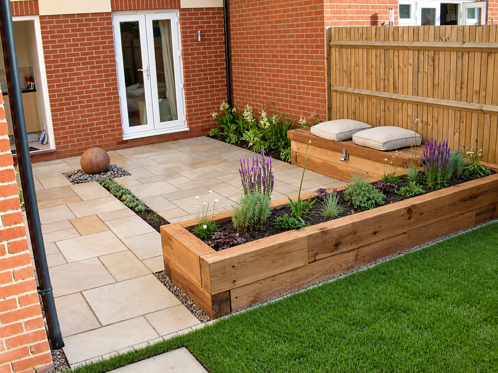
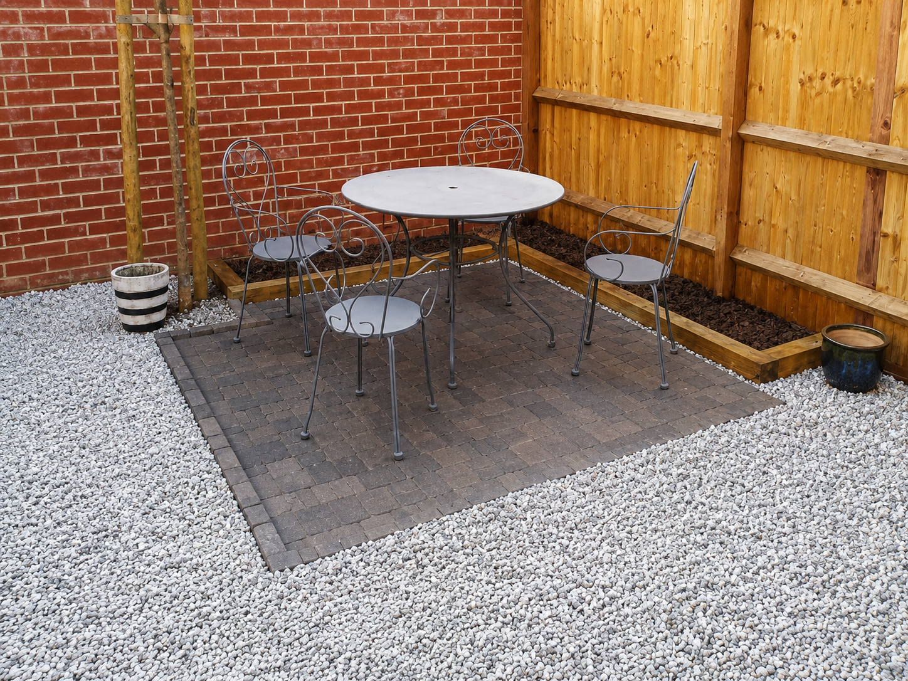

Fencing and decking in Sittingbourne, built for new gardens and old.
Based just along the A2/M2 in Medway, we cover Sittingbourne, Kemsley, Iwade, Bapchild, Borden and Milton Regis — from bare new-build plots that need their first proper boundary, to older gardens near the estuary that need fencing built to handle the coastal air. NVQ qualified. Fully insured. Free quotations.

Two very different kinds of job, and we do both.
Sittingbourne's grown fast over the last few years — Kemsley, Iwade, Bapchild and Borden have all seen thousands of new homes go up, and a lot of those gardens are still on the thin, basic fence panels the developer fitted. They rarely last, and upgrading them to something that'll actually hold up is one of the jobs we do most often out that way.
Closer to the town centre and Milton Regis, it's a different picture — older, established gardens where the ask is usually a straight replacement or repair. And for anywhere nearer the Swale estuary, we factor in the salt air and exposure too, steering towards pressure-treated timber, corrosion-resistant fixings or composite where low maintenance matters more than usual.
Fencing & decking, done properly.
A few examples of the kind of fencing and decking work we regularly carry out across Sittingbourne and the wider Kent area.
 Timber Pergola
Timber Pergola
 Composite Decking
Composite Decking
 Hardwood Decking
Hardwood Decking

Patio & FencingNew estate or established garden, we've got it.
As well as Sittingbourne itself, we regularly cover the surrounding villages and suburbs, including:
covered
New estate or old garden — we know what each one needs.
An easy trip from Medway
We're based just along the A2/M2 corridor, so getting out to Sittingbourne, Kemsley or Iwade for a quote — or back out quickly if you need us — is never a problem.
We know the new-build estates
From upgrading thin developer fence panels to fitting a first deck on a brand-new plot, we've done plenty of work across Kemsley, Iwade, Bapchild and Borden.
Estuary-aware material choices
For gardens nearer the Swale, we factor in salt air and wind exposure when recommending timber treatment, fixings and finishes — so it holds up, not just looks good on day one.
NVQ qualified, fully insured
Formally trained to a recognised industry standard, with proper insurance behind every job — from a small repair to a full garden rebuild.

Ready to sort your Sittingbourne garden?
Get a free, no-obligation quote from Parkwood Fencing & Decking — usually within a couple of days.
Common questions from Sittingbourne customers.
Anything else, just ask when you get in touch — happy to talk through the specifics of your garden.
Yes, this is one of our most common jobs in Sittingbourne right now. Developer-standard fence panels are often quite thin and start looking tired within a couple of years — we regularly replace them with proper closeboard or panel fencing built to actually last.
It can, particularly for gardens closer to the water around Kemsley, Iwade and Lower Halstow — salt-laden air and exposure to wind off the estuary can age untreated timber and fixings faster. We'll usually recommend pressure-treated timber, galvanised or stainless fixings, and composite decking where upkeep is a concern.
We're based just along the A2/M2 corridor in Medway, so Sittingbourne is an easy trip for us — usually able to arrange a free site visit within a few days of your enquiry.
Yes — as well as Sittingbourne itself, we regularly work in Kemsley, Iwade, Bapchild, Borden, Milton Regis, Murston, Bobbing and Newington. If you're just outside these, get in touch anyway — we may still be able to help.